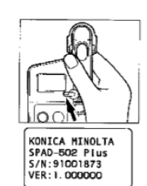
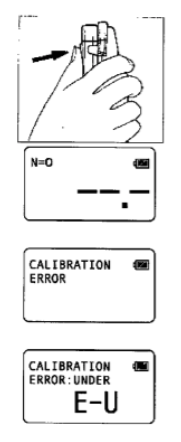
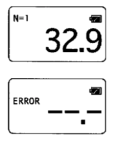
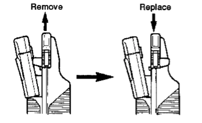
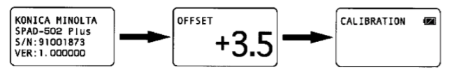
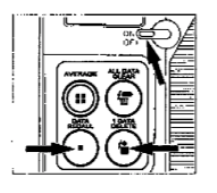
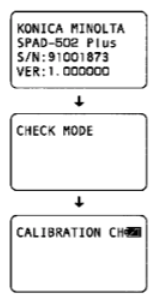
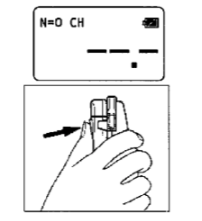
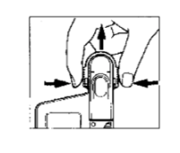
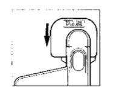

Gạt thanh sang nút ON để bật máy, máy sẽ hiển thị tên và chuyển sang chế độ cali
Kẹp đầu đo để cali tối, sau đó dùng mẫu đã cho để chuẩn độ
Tiến hành đo: Đặt lá tương ứng với vị trí cần đo, ấn đầu đo xuống đến khi màn hình hiển thị kết quả (N=i, lần đo thứ i; )
Tiếp tục kẹp sang các vị trí khác để đo, muốn biết trung bình thì ấn vào average, xem lại các kết quả đo ấn liên tục vào data recall.
Nếu ko dùng trong 2 tuần, tháo pin khỏi thân máy
Máy đo không thực hiện đúng, tắt đi bật lại. Nếu còn lỗi, máy đo gặp trục trặc và cần hỗ trợ
1. Tháo nắp bằng cách xoay theo hình
2. Lắp 2 pin size AA. Đảm bảo lấp đúng đầu.
Có thể dùng pin Alkaline-manganese
Không mix các loại pin
3. Xoay để đóng nắp
1. Bật ON
2. Khi không có mẫu, bấm vào chỗ để tay để đóng đầu đo. Giữ đến khi nghe tiếng bíp và màn hình hiện lên
Vùng đo 2x3 mm , đồ dày mẫu lên tới 1.2mm.
Center line chỉ trung tâm của vùng đo.
Depth stop có thể đo hằng số sâu
Sau khi dùng, lau khô với vải mềm, sạch . Không nhúng hay rửa với nước
1. Hiệu chuẩn
2. Cho mẫu vào đúng chỗ trên đầu đo
Đảm bảo mẫu che phủ hoàn toàn cửa sổ nhận
Không cố gắng đo những phần quá dày như là gân lá. Nếu lá có nhiều gân mịn, đo nhiều lần và lấy trung bình để có kết quả tốt nhất.
Nếu bộ phát sáng hay cửa sổ nhận bị bẩn hoặc dính nước, ko thể đo chính xác, lau sạch trước khi đo
Khi dùng máy trực tiếp dưới ánh sáng mặt trời, che máy đo bằng thân người để chặn ánh sáng ảnh hưởng đến phép đo
3. Bấm vào phần để tay để đóng đầu đo , giữ nó đến khi nghe tiếp bíp, Phép đo sẽ tự động lưu trong bộ nhớ

Depth stop dùng để tối đa độ sâu mà mẫu có thể được cho vào khay đo để giữ cho phép đo ổn định
Đặc biệt hữu dụng khi đo những lá nhỏ
Để đặt vị trí của depth stop, vắt 2 bên của depth stop chống lại các cạnh của đầu đo và trượt tới vị trí mong muốn.
Depth stop có thể di chuyển với khoảng cách từ 0-6mm từ đường tâm
Khi không dùng, tháo nó, xoay nó lại và thay thế nó trên đầu đo
Nhớ 30 giá trị, khi vượt quá, những giá trị cũ nhất sẽ mất đi lần lượt
Tất cả bộ nhớ sẽ xóa khi nhấn OFF
AVERAGE: Tính trung bình giá trị của mọi giữ liệu trong bộ nhớ
ALL DATA CLEAR: Xóa toàn bộ dữ liệu
DATA RECALL: Gọi lại data trước để kiểm tra
1 DATA DELETE: Xóa dữ liệu đang hiển thị khi nó không đúng
Giá trị bù có thể đặt từ -9.9 đến 9.9. Sau khi nhập giá trị bù, dữ liệu được tính theo công thức
Giá trị được hiển thị = Giá trị đo + Giá trị bù
Để nhập giá trị bù:
1 Bật nút on trong khi giữ đồng thời AVERAGE và DATA RECALL.
Máy đo sẽ vào chế độ bù và giá trị bù trước đó sẽ được hiển thị trên màn hình. Bằng 0.0 nếu chưa có.
2. Đặt giá trị bù bằng ALL DATA CLEAR (tăng) và 1 DATA DELETE (giảm). Giá trị bù sẽ tăng hoặc giảm 0.1 tương ứng.
3. Sau khi cài đặt giá trị mong muốn, bấm AVERAGE. Giá trị sẽ được lưu và hoàn thành. Tắt và bật lại để có hiệu lực
Nếu giá trị bù khác 0.0, màn hình hiển thị sau sẽ hiện khi bật nguồn:
Những máy đo khác nhau sẽ hiển thị kết quả có 1 chút khác biệt dù đo cùng 1 vị trí. Làm các bước sau và thêm giá trị bù để giảm thiểu tới mức thấp nhất:
1. Chọn 1 máy đo làm chuẩn
2. Đo vùng giống nhau của 1 chiếc lá 1 vài lần với máy đo chính và bấm AVERAGE để lưu giá trị trung bình
3. Làm tương tự b2 với các máy đo khác
4. Thêm vào bộ bù để giá trị tb được giống nhau
Dùng để xem máy có hoạt động bình thường không, nên làm theo chu kỳ để giữ cho sự chính xác được tốt nhất
1. Bật ON khi giữ đồng thời 1 DATA DELETE và DATA RECALL. Máy đo sẽ vào checkmode với màn hình được hiện như sau:
 2. Thực hiện hiệu chỉnh. (như MỤC HIỆU CHỈNH)
3. Tháo depth stop
4. Lắp bộ reading checker vào khay mẫu, bấm vào chỗ để tay để đóng đầu đo, giữ đến khi nghe tiếng bíp và giá trị đo được hiện
5. Lặp lại b4 1 vài lần
6. Tính trung bình giá trị bằng AVERAGE. Và so với giá trị của reading checker, nếu không gần với giá trị trên,
lau sạch bộ phát và cửa sổ thu và lặp lại quá trình từ b1. Nếu vẫn không đúng, máy có thể đã gặp trục trặc. Liên hệ hỗ trợ
7. Quay trở lại chức năng bình thường. Bấm OFF rồi ON trở lại
Chỉ nên reading checker trong checkmode và cùng mẫu với máy đo
Không dùng ngoài trời, dùng trong nhà ko có ánh sáng mặt trời trục tiếp, nhiệt và ẩm độ cao
Sự sai khác giá trị của reading checker và giá trị đo được có thể được hiệu chỉnh bằng giá trị bộ
Không chạm vào mặt kính của reading checker. Nếu bẩn hãy lau nó bằng vải sạch, mềm và ẩm.
Để bảo vệ rc, nó nên được để trong hộp phụ kiện. Không để ở vùng có nhiệt độ và độ ẩm cao